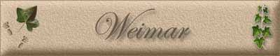

|
|
|
Schloss Belvedere
Goethesgartenhaus
Schloss Belvedere
Goethes Haus am Frauenplan
Goethe und Schillerdenkmal vor dem Nationaltheater
Herzogin Anna Amalien Bibliothek
|

Weimar, 1. Kreisstadt in Thüringen, an der 11m (beiderseits des Flusses Landschaftspark, mit Goethes Gartenhaus, 17. Jh.), 240 m ü. M., 63700 Ew. (1988); Herderkirche (dreischiffige spätgotische Hallenkirche mit Cranach-Altar), Jakobskirche (1712), Schloss (16. Jh.; Sitz der Staatl. Kunstsammlungen u. der Nationalen Forschungs- u. Gedenkstätten der klass. dt. Literatur), Grünes Schloss (1562-1569; Thüringische Landesbibliothek), Rotes (1574-1576) u. Gelbes Schloss (begonnen 1702), Cranach-Haus (1549), Wittumspalais (Museum), Schloss Tiefurt (16. Jh., umgestaltet ab 1776) im Tiefurter Landschaftspark, Schloss Belvedere (1724-1732) mit Barockgarten; Goethe- u. Schiller- Haus mit angeschlossenen Museen, Bertuchhaus (1806, Stadtmuseum), Grabstätten von Goethe u. Schiller auf dem Friedhof vor dem Frauentor; Dt. Nationaltheater, Goethe- u. Schiller-Archiv (1896), Staatl. Kunstsammlungen, Museum für Ur- u. Frühgeschichte Thüringens; Nationale Mahn- u. Gedenkstätte -+ Buchenwald (ehem. Konzentrationslager auf dem Ettersberg); Hochschule für Architektur u. Bauwesen, Hochschule für Musik (im ehem. Fürstenhaus, 1774), Institut für Lehrerbildung; Elektro-, Metall-, Uhren-, Möbel-, Bau-, Baustoff-, graph. u. Maschinenindustrie; Verkehrsknotenpunkt.
Geschichte: Weimar wird erstmals 975 als Wimares erwähnt. Neben einer um 1000 errichteten Wasserburg an der I1m entstand eine Siedlung, die 1348 Stadtrecht erhielt. Seit 1372 war Weimar im Besitz der Wettiner; 1547-1918 war es Residenz des Herzogtums Sachsen-Weimar bzw. (seit 1815) des Großherzogtums Sachsen-Weimar-Eisenach. In den letzten Jahrzehnten des 18. u. den ersten des 19. Jh. war W. ein Mittelpunkt des dt. Kulturlebens; dort wirkten Wieland, Goethe, Herder u. Schiller. 1919/20 tagte in Weimar die dt. Nationalversammlung, die die Verfassung der Weimarer Republik beschloss. 1919-1925 hatte das Bauhaus seinen Sitz in Weimar. 1920-1948 war Weimar Hptst. des Landes Thüringen.
|